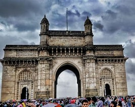

Mumbai is also known as Bombay its official name until 1995, is the capital city of the Indian state of Maharashtra. Mumbai is the financial capital and the most populous city proper of India with an estimated population of 12.5 million (1.25 crore).[20] Mumbai is the centre of the Mumbai Metropolitan Region, the seventh-most populous metropolitan area in the world with a population of over 23 million (2.3 crore).[21] Mumbai lies on the Konkan coast on the west coast of India and has a deep natural harbour. In 2008, Mumbai was named an alpha world city.Mumbai has the highest number of billionaires out of any city in Asia.
The seven islands that constitute Mumbai were earlier home to communities of Marathi language-speaking Koli people.
For centuries, the seven islands of Bombay were under the control of successive indigenous rulers before being ceded to the Portuguese Empire, and subsequently to the East India Company in 1661, as part of the dowry of Catherine of Braganza in her marriage to Charles II of England.[28] Beginning in 1782, Mumbai was reshaped by the Hornby Vellard project,[29] which undertook reclamation of the area between the seven islands from the Arabian Sea.[30] Along with the construction of major roads and railways, the reclamation project, completed in 1845, transformed Mumbai into a major seaport on the Arabian Sea.
BACK